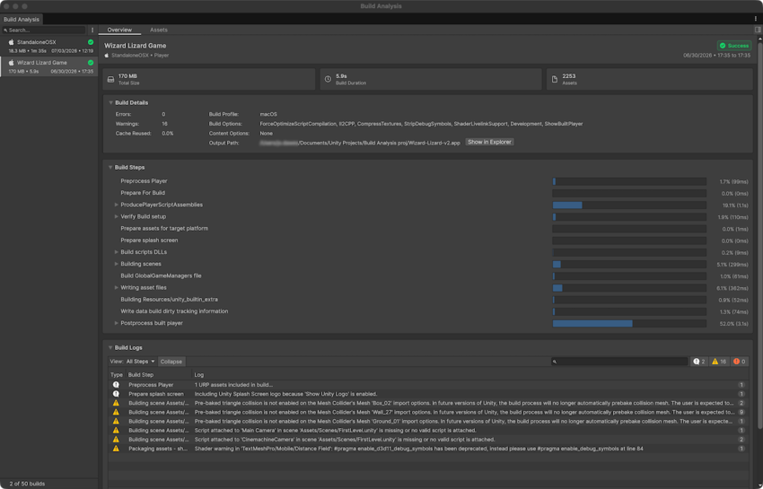

Use the Build Analysis window to inspect the build history of your project. To open the window go to Window > Analysis > Build Analysis.

The window has the following tabs to explore the data related to a build:
Both tabs display the outcome of the build as either Success or Failure, along with the date and timing of the build.
The sidebar contains a list of any builds that are in the BuildHistory folder of your project. By default, the BuildHistory folder is nested in the Library folder of your project. You can configure its location in the Project Settings window. Right-click on the build to display it in a file browser, copy its path, or delete the build directory from the BuildHistory folder.
The top of the tab contains a summary of the following:
| Property | Description |
|---|---|
| Total Size | Displays the total size of the build. |
| Build Duration | Displays how long the build took to create. |
| Assets | Displays the total number of assets in the build. For a full list of the assets in the build, refer to the Assets tab. |
Displays a summary of the details of the build.
| Property | Description |
|---|---|
| Errors | Displays the number of errors Unity logged during the build. The Messages section displays a detailed list of any errors. |
| Warnings | Displays the number of warnings Unity logged during the build. The Messages section displays a detailed list of any warnings. |
| Cache Reused | Displays the percentage of the build’s content that Unity reused from a previous build. |
| Build Options | Displays the build options enabled for this build. |
| Content Options | Displays the content build options for this build. Only applicable for content directory builds. |
| Output Path | Displays the folder that Unity wrote the build to. |
Displays the time spent on each step of the build process. Build steps are the high-level steps that Unity performs in sequence on the main thread during a build.
Some build steps hand work to other processes, which then run tasks in parallel across several threads. This work is displayed as one single step without a breakdown of the tasks that make up the work. Tasks that are displayed as one single step are as follows:
BuildPlayerTEP.json file in the BuildHistory folder contains a complete breakdown of the tasks in this step.BuildContentTEP.json file in the BuildHistory folder contains a complete breakdown of the tasks in this step.These files include the same build steps as the Build Steps section, plus the individual tasks inside each step, including tasks that run in parallel. For more information, refer to Profiling files.
Displays a list of info, warning, and error messages related to the build. Use the View dropdown to filter the messages by build step. You can also select Collapse to collapse any duplicated messages.
The top of the tab contains a summary of the following:
| Property | Description |
|---|---|
| Scenes | Displays the total number of scenes in the build. |
| Assets | Displays the total number of assets in the build. |
| Root Assets | Displays the total number of root assets in the build. Only applicable for content directory builds. |
Displays a list of the root assets in the build. Only applicable for content directory builds.
| Property | Description |
|---|---|
| Name | Displays the root asset’s file name. |
| Direct Size | Displays the build output size for this root and what loads immediately with it. Excludes on-demand loadable content. |
| Direct Assets | Displays the number of source assets that load immediately with this root. Excludes on-demand loadable content. |
| Total Size | Displays the build output size for everything reachable from this root asset, including on-demand loadable content. |
| Total Assets | Displays the number of source assets reachable from this root asset, including on-demand loadable content. |
You can right-click on any of the assets in the list to select the asset in your project, or copy its path.
Select the Toggle Inspector icon at the top right of the window to display further information about a root asset when you select it in the list. The inspector additionally displays a References list, which contains a list of all assets contained in the root asset.
Displays a list of the assets included in the build.
| Property | Description |
|---|---|
| Name | Displays the asset’s file name. |
| File Extension | Displays the file extension of the asset. |
| Output Size | Displays the size of the asset. The table is ordered by this value by default. |
You can right-click on any of the assets in the list to select the asset in your project, or copy its path.
Select the Toggle Inspector icon at the top right of the window to display further information about an asset when you select it in the list:
| Property | Description |
|---|---|
| Output size | Displays the size of the asset. |
| Importer type | Displays the importer that imported the asset. |
| Objects count | Displays the number of objects that this asset contributes to. |
| Resources files | Displays the number of resource streams that the objects from the asset reference. |
| Asset path | Displays the file path of the asset. |